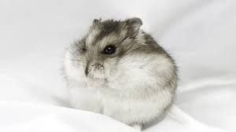
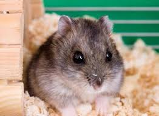

Хом'яки - підродина гризунів сімейства хом'якових. Включає 19 видів, що належать до семи пологів. Є популярними домашніми вихованцями. Найвідомішим видом хом'яка є золотий або сирійський хом'ячок, який найчастіше використовується як домашня тварина.
  Головна сторінка